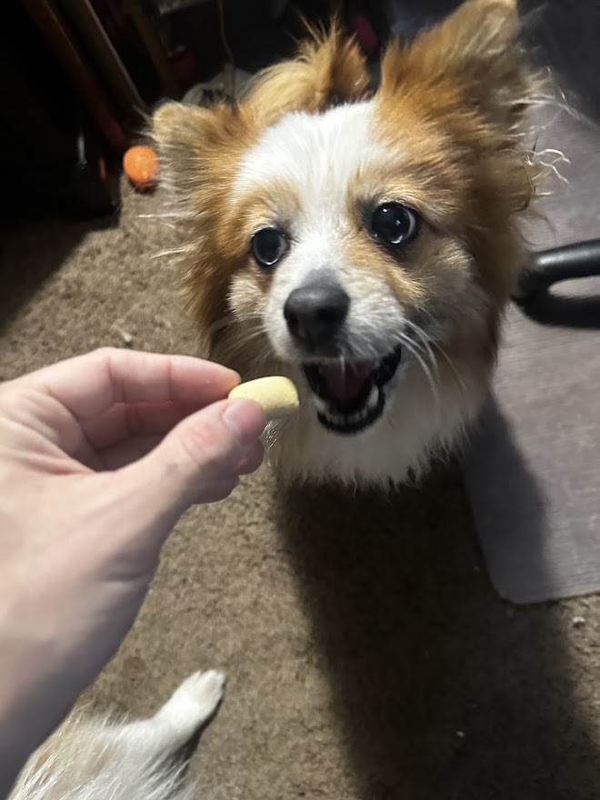

Looking for a crunchy and flavorful treat for your pup? Milk Bone Maro Snacks might just be the perfect option! These treats are designed to provide a satisfying crunch with a meaty center that dogs absolutely love.
The combination of a baked biscuit exterior with a real bone marrow-filled center makes these snacks both tasty and nutritious. They are packed with calcium and essential vitamins to support strong bones and overall canine health.
Perfectly sized for dogs of all breeds, these treats can be used as a reward, training snack, or just a simple way to show your pup some love. Their crunchy texture also helps clean teeth and freshen breath!
If your dog enjoys a mix of textures and flavors, Milk Bone Maro Snacks are a great choice. Available at most pet stores and online retailers, they offer an affordable way to treat your pup while keeping their health in mind.
Purchase From Amazon: https://www.chewy.com/milk-bone-marosnacks-real-bone-marrow